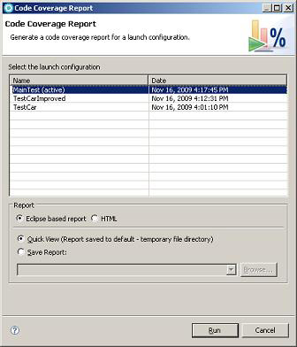

什么是 Rational Code Coverage 特性？
代码覆盖率是软件测试的一个重要方面，对于一个构件的总体系统测试来说可能是一个基本的参数。覆盖工具背后的动机向您（作为开发员或者测试 员）提供了关于代码的一系列观点，这些代码在一系列的测试之中会得到检查。该信息会非常的有用，因为您可以使用它来设计新的测试用例以获得足够的覆盖范 围。
IBM® Rational® Code Coverage 特性是一个与 IBM® Rational® Application Developer 相集成的工具。您可以使用它来生成并分析关于 Java 程序的覆盖率统计数据。工具会为测试下的程序生成声明覆盖率统计数据（这就是说，执行程序中行的数量与百分比）。
Rational Code Coverage 特性现在只能获得 Rational Application Developer 7.5 版本及其后续版本。本文假设您使用的是 Rational Application Developer 7.5.4 版本。对代码覆盖率而配置 IBM® WebSphere® Application Server 的部分假设您使用的是 7.0 版本，但是提供的指南的一些调整仍然适用于上述版本。
为了适当地分析 Rational Code Coverage 特性中的覆盖率统计数据，理解场景背后所用到的技术是非常重要的。
Eclipse Test 与 Performance Tools Project（TPTP）中提供的 Rational Code Coverage 特性所使用的工具引擎。Probekit 用于控制一个类的比特代码，并引入覆盖率数据收集引擎的通用访问。图 1 提供了关于这个过程的一个高层次的概述：
图 1. Rational Code Coverage 执行环境的概述
Probekit 是一种在 Eclipse 平台上的框架，并可以操作所谓 可执行单元 的比特代码。可执行单元的定义与 基本块 的传统定义有轻微的不同，但是当您在分析结果时，您就需要去关注这点差异了。
根据定义，一个所谓的基本块就是一系列的指南，这些指南不能再进行分支或者分散。这里的关键思想在于，当第一个指南运行的时候，该块中随后所
有指南都一定会得到执行而且不会得到中断。接下来的是一个基本块，它可以认为是一个单个组或者一系列的指南。通常来说，基本块的结尾是
branch， call,
throw 或者 return
声明。
一个可执行的单元由每一个基本快开始，而与每行源代码相对应的指南与前面版本中的指南有所不同。可执行的单元与基本块的不同点，在于决定一个
可执行单元末尾的因素。例如， divide 指南并没有认为是一个可执行单元的结尾，尽管有例外情况的存在。
Probekit 是 Rational Code Coverage 特性所使用的，以将通用代码引入到每一个可执行的单元之中。结果来说，您可以定制 Rational Code Coverage 特性以向组成性（换句话说，就是块覆盖率）可执行单元层次报告统计数据。为了知道这些工具是怎样更改类了，您可以参考接下来的代码清单 1 与代码清单 2。代码清单 1 提供了未处理类的分解输出（从 javap 工具来），同时代码清单 2 为处理过的类提供了分解输出。注意代码清单 2 中 italics 的行就是作为处理步骤一部分导入的代码部分。
清单 1. 未处理的类文件
Compiled from "Part.java"
public class com.ibm.storeapp.models.Part extends java.lang.Object{
public com.ibm.storeapp.models.Part(int);
Code:
0: aload_0
1: invokespecial #15; //Method java/lang/Object."<init>":()V
4: iload_1
5: bipush 10
7: if_icmple 18
10: aload_0
11: iload_1
12: invokespecial #18; //Method setDiscountedPrice:(I)V
15: goto 23
18: aload_0
19: iload_1
20: putfield #21; //Field price:I
23: return
public int getPrice();
Code:
0: aload_0
1: getfield #21; //Field price:I
4: ireturn
}
|
清单 2. 每一个可执行单元处理的类文件
Compiled from "Part.java"
public class com.ibm.storeapp.models.Part extends java.lang.Object{
public com.ibm.storeapp.models.Part(int);
Code:
0: ldc #49; //String com/ibm/storeapp/models/Part 2: iconst_0 3: iconst_0 4:
invokestatic #48; //Method llc_probe$Probe_0._executableUnit:(Ljava/lang/String;II)V
7: aload_0
8: invokespecial #15; //Method java/lang/Object."<init>":()V
11: ldc #49; //String com/ibm/storeapp/models/Part 13: iconst_0 14: iconst_1 15:
invokestatic #48; //Method llc_probe$Probe_0._executableUnit:(Ljava/lang/String;II)V
18: iload_1
19: bipush 10
21: if_icmple 46
24: ldc #49; //String com/ibm/storeapp/models/Part 26: iconst_0 27: iconst_2 28:
invokestatic #48; //Method llc_probe$Probe_0._executableUnit:(Ljava/lang/String;II)V
31: aload_0
32: iload_1
33: invokespecial #18; //Method setDiscountedPrice:(I)V
36: ldc #49; //String com/ibm/storeapp/models/Part 38: iconst_0 39: iconst_3 40:
invokestatic #48; //Method llc_probe$Probe_0._executableUnit:(Ljava/lang/String;II)V
43: goto 58
46: ldc #49; //String com/ibm/storeapp/models/Part 48: iconst_0 49: iconst_4 50:
invokestatic #48; //Method llc_probe$Probe_0._executableUnit:(Ljava/lang/String;II)V
53: aload_0
54: iload_1
55: putfield #21; //Field price:I
58: ldc #49; //String com/ibm/storeapp/models/Part 60: iconst_0 61: iconst_5 62:
invokestatic #48; //Method llc_probe$Probe_0._executableUnit:(Ljava/lang/String;II)V
65: return
public int getPrice();
Code:
0: ldc #49; //String com/ibm/storeapp/models/Part 2: iconst_2 3: iconst_0 4:
invokestatic #48; //Method llc_probe$Probe_0._executableUnit:(Ljava/lang/String;II)V
7: aload_0
8: getfield #21; //Field price:I
11: ireturn
static {}; Code: 0: ldc #49; //String com/ibm/storeapp/models/Part 2: ldc #55;
//String Part.java 4: ldc #57; //String <init>(I)V+setDiscountedPrice(I)V
+getPrice()I 6: ldc #59; //String #10+11032,301,3 8: invokestatic #54;
//Method llc_probe$Probe_0._staticInitializer:
(Ljava/lang/String;Ljava/lang/String;Ljava/lang/String;Ljava/lang/String;)V 11: return
}
|
在 Rational Application Developer 中生成覆盖率统计数据
Rational Code Coverage 特性的一个主要的优势在于，您可以通过切换到项目 Properties 的 Code Coverage 窗格，来将其在 Rational Application Developer 中的 Java 项目上激活，如图 2 所示。
图 2. 项目 Properties 中的代码覆盖窗格
选择图 2 中的 Enable code coverage 复选框以激活项目的代码覆盖率，并评价覆盖下项目的类。您还可以使用该窗格来定制可接受的覆盖率层次。接下来描述了组合的支持层次：
- 类型覆盖率：一个类中覆盖的类型百分比
- 方法覆盖率：一个类中覆盖的方法百分比
- 行覆盖率：类文件中覆盖的行百分比
- 块覆盖率：一个类文件中覆盖的块的百分比。注意一个块会参考一个可执行的单元（如 以前描述的那样 ）
您还可以指定通用的筛选规则，而且它们可以用于控制在项目中评价哪些内容。默认条件下，项目中的所有类都会得到评价，但是您可以创建通用的筛 选规则来排除目标包或者指定类型，如果您需要限制结果的话。
在您激活一个项目中的代码覆盖率以后，覆盖率统计数据就会在下一次程序启动的时候生成。注意不是所有类型启动配置都会自动生成统计数据。表 1 显示了 Rational Application Developer 内支持的启动类型。
表 1. 支持的启动配置
| 启动类型 |
|---|
| Java Applet |
| OSGi 框架 |
| JUnit |
| JUnit 插件测试 |
| Java 程序 |
| Eclipse 程序 |
| 标 准 Widget Toolkit （SWT）程序 |
在 下载 部分中提供了一个范例程序，本文至始至终都会使用该范例。该程序是一个不同交通工具（汽车、货车、摩托车等等）的简单再现。图 3 中是一个概括了该程序结构的 UML 图。
图 3. 范例程序的 UML 图
在项目中有两种定义好的 JUnit 测试：TestCar.java 与 TestCarImproved.java。
正如其名字所暗含的一样，这些测试的目标是 Car.java 类。而在 Rational Application
Developer 的 Java 视角中，您可以右击 TestCar.java 并选择 Run As
> JUnit test 来启动 TestCar.java 测试。JUnit
测试的结果会正常显示在 JUnit 视图中。覆盖率数据的结果会集成到 Rational Application Developer UI
中，而且您可以切换回 Package Explorer 来分析它们。图 4 显示了 TestCar.java
测试的一个范例结果。
图 4. Package Explorer 中显示的 TestCar.java 的覆盖率数据
默认条件下，UI 只与行覆盖率信息一起注释；但是，您可以在工作台偏好中更改它们，并且可以选择为包、类型以及块而包含覆盖率。每一个 Java 项目的百分比是最后一次执行代码覆盖率的中断。您可以在 Package Explorer 中深入研究各种 Java 工件（例如，类、类型与方法）以得到较低组合层次上的覆盖率统计数据。
结果得到的结果的颜色情况取决于成功率：默认条件下，红色意味着没有达到可接受的覆盖率层次，而绿色则意味着得到了适当的覆盖率范围。一般来 说，测试的目的在于达到类可接受覆盖率层次的结果。
基于如图 4 所示的结果，第一个测试是不充分的：Car 类（以及抽象父类 AbstractFourWheelVehicle
和 Vehicle）并不能达到适当的覆盖率层次。幸运的是，您有第二次尝试的机会：TestCarImproved.java。
您可以再一次将测试作为一次正常的 JUnit 执行，而结果将会在 Package Explorer 中进行自动更新（图 5）。
图 5. Package Explorer 中显示的 TestCarImproved.java 的代码覆盖率数据
行覆盖率结果也是显示的，并在 Java
编辑器中有所标记，而您可以使用它来得到一个更加明确的指示，也就是每一类中涉及到了哪一行。在生成覆盖率数据之后，您就可以使用 Java
编辑器来在项目中打开任意的类了，编辑器中左边的标尺栏显示了关于覆盖率的信息。图 6 显示了 Vehicle.java
的结果：
图 6. Java 编辑器中显示的覆盖率结果
颜色编辑与在 Package Explorer 中所显示的是一样的。也就是，默认条件下，绿色的行是覆盖的而红色的则不是覆盖的。在
Java
编辑器中查看结果有一个微弱的优势，那就是它还指示了部分覆盖的行。当在源代码中有不止一个的可执行单元时就会产生部分覆盖的行，但是它们中只有一个可以
被执行。例如，查看图 6 中
setTargetSpeed(int speed)
方法中第一行的代码 ：第一个可执行的单元是
if 声明，而第二个可执行的单元则是
return 声明。默认条件下，一个部分的行会被标上黄色。
您可以将代码覆盖率结果数据汇编到报告之中并在 Rational Application Developer 中查看它们，或者将它们保存到文件系统中以便未来的分析。您可以生成两种不同类型的报告：Workbench 报告（基于 Eclipse）与 HTML 报告。为了生成一份报告，您可以选择 Run > Code Coverage > Generate Report。 图 7 显示了报告生成对话框。
图 7. 报告生成对话框

您可以在 Rational Application Developer 中使用对话框中的 Quick View 选项来创建并查看一个报告，或者使用 Save Report 选项将其保存到文件系统中去。
工作台报告（也叫做基于 Eclipse 的报告）为项目提供了所有覆盖率统计数据的稳固视图，并包含了执行时项目中所有类的覆盖率数据。图 8 显示了一个基于 Eclipse 流传的报告。
图 8. 一个基于 Eclipse 报告的覆盖率结果
工作台报告与 Rational Application Developer 相集成具有额外的优势，因为您可以使用它们作为一个快速的工具，以提供了关于部分代码的视角，这些代码需要改进的测试覆盖率数据。如图 8 所示，工作台报告中的统计数据包含了所有层次组成的覆盖率信息：从一个包到一种方法。右击任意的 Java 工件会显示出一个带有两种操作的弹出菜单： 在 Package Explorer 中显示 与 在 Java 编辑器中将其打开。对于识别 和研究带有低覆盖率的代码区域来说，它们是非常有用的工具，因为通过将它们在适当的浏览器或者编辑器中打开，从而强调了代码的选择区域。
HTML 报告显示了基于 Eclipse 报告所提供的相同类型的信息，但是呈现的格式却是 HTML 的。这些报告能够发挥一定程度的作用，因为它们为在独立于 Rational Application Developer 之外去分析覆盖率数据提供了一种有效的方法，您可以与团队的其他成员一起分享，或者将其发布到一个网站上以方便查看。
Rational Code Coverage 工具的一个主要特性是其在 Rational Application Developer 外部生成统计数据的能力。它提供了额外的灵活性，并使得您可以定制环境以利用系统中的 Rational Code Coverage 特性。例如，一个自然的合并过程就是创建一个构建环境并使用 JUnit 测试来生成统计数据。
通过执行以下的三个步骤：评价，执行以及生成报告，您可以将 Rational Code Coverage 特性集成到您的环境之中。
您可以使用两种不同的方法来评价您的程序。第一个就是使用
<RAD_HOME>/plugins/com.ibm.rational.llc.engine_<date>/scripts
目录中提供的 instrument.bat/sh
脚本。本文并没有关注这个脚本，但是您可以参考 Rational Application Developer
文献以得到更多的信息，如果需要的话。第二个方法是使用 Rational Code Coverage 特性提供的评价 Ant 任务。代码清单 3
显示了评价任务配置的范例用法，以得到本文中的范例程序。
清单 3. 本文范例程序的评价 Ant 任务的范例用法
<target name="instrument">
<taskdef name="instrument"
classname="com.ibm.rational.llc.engine.instrumentation.anttask.InstrumentationTask"
classpath="{path to com.ibm.rational.llc.engine plugin}"/>
<instrument saveBackups="true"
baseLineFile="project.baseline"
buildPath="VehicleProject"
outputDir="VehicleProjectInstr"/>
</target>
|
对预期参数的快速预览，已经列在后续的表 2 中。
表 2. 指南任务的输入参数
| 参数 | 描述 |
|---|---|
buildPath
| 对文件系统上项目的路径 |
outputDir
| （可选的）评价项目的输出目录。如果没有指定，
buildPath 中的类将会进行评价。 |
baseLineFile
| （可选的）基线项目索引文件的输出位置。查看接下来的段落以得到关于该文件更多的信息。 |
saveBackups
| （可选的）如果在评价之前先备份原始的类文件，那么您可以设置为 true。 |
评价的两种方法都会输出一个基线文件。所谓的基线文件是一个特定于 Rational Code Coverage 特性的概念。基线文件包含了项目中所有类的一个索引，并维护了关于每一个类的额外元数据。该文件在报告阶段（接下来的第 3 步）使用以决定程序中的哪一个类 不被 覆盖。该步是需要的，因为 Rational Code Coverage 数据收集引擎只是在 Java™ Virtual Machine（JVM）载入类时才会标记一个类，所以没有执行的类的列表在没有元数据存在的条件下就不能进行决定了。如果基线文件没有在报告时出现，那 么没有载入的类将不会出现在报告中。
为了执行评价好的类，您必须在启动时对 Java 环境做适当的配置。执行过程中所需的两个特定的参数解释如下：
-
-Dcoverage.out.file=<absolute path to output file>： 该 JUM 论断指定的文件就是覆盖率统计数据的输出位置 - 向 classpath 添加
<Rational Application Developer HOME>/plugins/com.ibm.rational.llc.engine_<date>/RLC.jar： 因为代码已经进行了评价并得到了 Rational Code Coverage 数据搜索引擎的回馈，RLC.jar 文件需要在运行时位于 classpath 处。
JUnit Ant 任务提供了这些参数。代码清单 4 提供了范例用法。
清单 4. 怎样指定 Ant 启动中 Rational Code Coverage 特性论断的范例
<target name="run">
<junit showoutput="true" fork="yes">
<jvmarg value="-Dcoverage.out.file={absolute path to the output file}"/>
<classpath>
<pathelement location="{absolute path to the
<Rational Application Developer HOME>/plugins/com.ibm.rational.llc.engine_<date>
/RLC.jar file}"/>
<pathelement location="{path to the project classes}"/>
<pathelement path="{absolute path to the junit.jar}" />
</classpath>
<test name="com.ibm.vehicles.tests.TestCar" outfile="TestCar" />
</junit>
</target>
|
您可以使用 Rational Code Coverage 特性所提供的另外一项 Ant 任务来生成报告。该项任务使用 BIRT Eclipse.org 项目所提供的报告功能，并因此需要您去下载 BIRT V2.3.2 Reporting Engine 独立版。该操作可以通过访问 http://www.eclipse.org/birt/download，选择 V2.3.2 版本并下载 Report Engine 版本来完成。注意该 Ant 任务只能产生 HTML 报告。
清单 5 提供了报告 Ant 任务的范例用法。注意，作为输入，它需要在第 2 步中所生成的覆盖率数据以及在第 1 步中（可选）所生成的基线文件。
清单 5. 本文中范例程序报告生成 Ant 任务的范例
<target name="generate-report">
<path id="lib.path">
<pathelement location="{absolute path to the
<Rational Application Developer HOME>/plugins/
com.ibm.rational.llc.common_<date>.jar plugin}"/>
<pathelement location="{absolute path to the
<Rational Application Developer HOME>/plugins/
com.ibm.rational.llc.report_<date> plugin}"/>
<pathelement location="{absolute path to the
<Rational Application Developer HOME>/plugins/
org.eclipse.equinox.common_<date>.jar plugin}"/>
<fileset dir="{absolute path to the BIRT ReportEngine directory}\lib" includes="*.jar"/>
</path>
<taskdef name="code-coverage-report"
classname="com.ibm.rational.llc.report.birt.adapters.ant.ReportGenerationTask"
classpathref="lib.path"/>
<code-coverage-report
outputDir="{absolute path to the report output directory}"
coverageDataFile="{absolute path to the coveragedata file generated in step 1}"
baseLineFiles="{absolute path to the baseline file generated in step 1}"/>
</target>
|
在图 9 中显示有一个范例 HTML 报告。使用 Ant 任务生成 HTML 报告会提供一种方法，用户可以通过这种方法来查看独立于 Rational Application Developer 之外 Ant 环境中生成的统计数据。
图 9. HTML 报告中的覆盖率结果
本文的 下载 部分为 Ant 环境提供了范例脚本以及构建文件，该环境可以用于指导、执行并生成关于范例程序的报告。如果您对测试该环境感兴趣，那么您可以参考一下 Standalone.zip 文件中的 README 文件。
在 WebSphere Application Server 上生成统计数据
使用 WebSphere Application Server 来生成代码覆盖率统计数据在这里是支持的，但是不幸的是，这个版本中并不支持来自 Rational Application Developer 内部的自动化配置。但是，版本中提供的 Rational Code Coverage 特性足够灵活以集成到服务器环境中去，包括 WebSphere Application Server。为了对代码覆盖率而配置您的 WebSphere Application Server ，您需要按照以下步骤进行操作：
- 启动服务器
- 登录到 Administrative Console
- 在左边的窗格中，展开 Servers
- 展开 Server Types
- 点击 WebSphere 程序服务器
- 选择适当的程序服务器
- 展开右部窗格选项区域内 Server Infrastructure 部分中 Java and Process Management 项
- 点击 Process definition
- 点击 Additional Properties 部分中的 Java Virtual Machine
- 在 Boot Classpath 部分中，添加 RLC.jar 文件。如上面介绍的那样，该
.jar 文件位于 Rational Code Coverage 数据收集引擎中，并位于
<Rational Application Developer HOME>/plugins/com.ibm.rational.llc.engine_<date>/RLC.jar - 在
Generic JVM arguments中，添加-Dcoverage.out.file={output file}JVM 论断。如上面所述的那样，该论断指定了应该将输出的统计数据保存在什么地方。 - 保存服务器配置并重启服务器。
图 10 显示了在作出以上所做的变更之后 Administrative Console 的屏幕截图。注意在每一个服务器实例的后面必须有一个指南，这些服务器实例会执行一个代码覆盖率程序。
图 10. WebSphere Application Server 对 Rational Code Coverage 特性的配置
在服务器对代码覆盖率进行配置之后，您就可以手动对服务器进行代码覆盖率的配置了（从 Administration Console 上进行），或者使用 Rational Application Developer 中的集成支持功能。注意覆盖率的结果不会自动导入到 Rational Application Developer 中以进行分析，这样您需要执行接下来的步骤来将统计数据导回到工作区中：
- 在 Rational Application Developer 中的 Java 视角中，右击 Package Explorer 并选择 Import
- 展开 Code Coverage
- 选择 Code Coverage Data File 并点击 Next
- 选择 Data is located on the file system 选项并点击 Next
- 在 Coverage Data file 区域中，选择服务器所提供的文件系统上的覆盖率数据
- 在 Into folder 区域中，选择工作区中的一个目录以保存导入的文件。
- 在 Associate with Project 区域中选择适当的项目。您应该将统计数据与工作区中的项目联系起来，工作区中包含的源代码用于在服务器上生成统计数据。
- 点击 Finish
当覆盖率数据文件位于工作区中时，您可以在 UI 中显示统计数据并生成报告。您可以右击覆盖率文件并选择 Code Coverage > Show code coverage indicators 或者 Generate Report 来完成该操作。该功能可以使您更加受益，因为它提供了对分析 Rational Application Developer 中结果所用所有工具的访问途径。
| 描述 | 名字 | 大小 | 下载方法 |
|---|---|---|---|
| 本文的示例应用程序 | SampleApplication_CCRAD.zip | 26 KB | HTTP |
| 示例独立执行环境 | Standalone_CCRAD.zip | 28 KB | HTTP |
学习
-
使
用 Probekit 的介绍文章。
-
Probekit
产品文档。 包括所提供数据类型的附加文档。
-
Eclipse Test 和 Performance
Tools Project Web 页面。
-
Basic block
详细描述。
- 代码覆盖 技术概览。
-
检查 IBM® developerWorks® 上的 Rational
Application Developer for WebSphere Software 产品专题
页面，可以连接到产品文档、文章、教程、课程、下载，以及其它有用的区域。
- 查看 IBM
Rational Application Developer 信息中心 的技术指南。
- 在 IBM
Rational 软件交付平台
中了解其它应用程序，包括适用于并行开发和地域分布式团队的协作工具，以及用于架构管理、资产管理、变更和发布管理，集成需求管理、过程和组合管理，和质
量管理。您可以在 IBM
Rational 在线文档中心 查找产品手册、安装指南以及其它文档。
- 访问 developerWorks 上的
Rational 软件区域，了解有关 Rational 软件交付平台产品的技术资源和最佳实践。
- 查找 Rational 基于计算机、基于 Web，以及在线指导课程。训
练您的技能，并学习更多有关 Rational 工具的课程，包括入门级和高级课程。在此目录上的课程可进行购买，包括基于计算机的和基于 Web
的培训。此外，一些“入门”课程是免费的。
- 订阅 IBM
developerWorks 时事通讯，获得有关最佳的 developerWorks
教程、文章、下载、社区活动、网络广播和事件的每周更新。
获得产品和技术
- 下
载 Rational
Application Developer 免费试用版。
- 下载 IBM
Rational 软件的试用版本。
- 下载这些 IBM 产品评估版本，并着
手使用来自于 DB2®、Lotus®、Tivoli®，以及 WebSphere® 的应用程序开发工具和中间件产品。
讨 论
- 查看 developerWorks 上的 Rational 开发工具讨论区 和 JavaServer Faces 讨论区。
-
查看 developerWorks 博客，并加入 developerWorks 社区。


快 来添加第一条评论